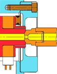
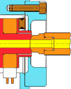

|
Enjeksiyon
makinesine baðladýktan sonra:
- Enjeksiyon
makine memesi çapý, sýcak yolluk sisteminin malzeme giriþ
çapýna eþit veya en fazla 1mm daha küçük olmalýdýr.
- Yolluk
giriþine iyi oturmayan makine memesi , malzemede yüksek
kesme gerilmelerine, basýnç kayýplarýna ve renk deðiþimlerinde
problem yaratacak ölü bölgelere neden olacaktýr:

> Yüksek Kesme Gerilmeleri
>
Basýnç Kayýplarý
>
Ölü Bölgeler
|

>
Düþük Kesme Gerilmeleri
>
Basýnç Kaybý yok
>
Ölü Bölge yok
>
Hýzlý renk deðiþimi
|
- Tüm
su baðlantýlarý, var ise hidrolik ve pnomatik baðlantýlarý
yapýlýp test edilmeli.
- Hidrolik
sistemde hava kalmadýðýndan emin olunmalý.
- Valf
pinlerin hareketini kontrol edilmelidir.
- Sýcak
Yolluk Sistemi resimlerinde belirtilen ve bu sistem için
öngörülmüþ çalýþma sýcaklýðý hiç bir zaman aþýlmamalýdýr.
(Bu sayede ýsýl genlemeler sonucu oluþacak gerilmeler artmayacak
ve kalýpta hasar veya olasý plastik malzeme kaçaklarý önlenecektir).
- Enjeksiyona
baþlamadan önce bütün bölgelerin istenilen çalýþma sýcaklýðýna
eriþtiði kontrol edilmelidir.
- Sýcaklýk
yolluk sistemi ýsýtýlýrken baþlangýçta tüm ýsýtýcýlarýn
kapalý olmasý, her bölgenin ayrý ayrý ýsýtýlarak o bölgedeki
sýcaklýk ölçerin cevap verdiðinden emin olunmasý gerekir.
- Bu
iþlemin kalýp enjeksiyon presinde tam kapama kuvveti altýnda
iken yapýlarak sýkýþmýþ kablo olmadýðýndan emin olunmalýdýr.
- "Valf
Gate" li kalýplarda soðutma sularýný açtýktan sonra sýcak
yolluk sistemi ýsýtýlmalýdýr.
- Kalýp
sökülür iken de önce sýcak yolluk sisteminin ýsýtýcýlarý
kapatýlmalý, kalýp oda sýcaklýðýna soðuduktan sonra soðutma
sularý kapatýlýp kalýp presten indirilmelidir.
- Sýcak
yolluk sistemi dengeli termal genlemeler oluþturacak þekilde
çalýþma sýcaklýðýna iyice ýsýtýlmalýdýr.
- Bunun
için kalýpta su devreleri açýk iken, sýcak yolluk sisteminin
sýcaklýðý çalýþma sýcaklýðýnýn 50-100C daha altýna ayarlanýp,
sistem bu sýcaklýkta en az 10 dak tutulmalýdýr.
- Sýcak
yolluk sisteminin sýcaklýðý, makine vida sýcaklýðýndan farklý
olmamalýdýr. Makine vidasýndan yolluk giriþ ucuna kadar
eþit bir sýcaklýk profili saðlanmalýdýr.
- Manifold
sýcaklýðýný çalýþma sýcaklýðýna ayarladýktan sonra, ayný
sýcaklýkta olan sýcak yolluk memelerinin sýcaklýklarý istenilen
yolluk artýðý miktarýna göre çok küçük aralýklarda deðiþtirilebilir.
- Yolluk
meme uclarýndaki soðutma çevrimleri, hiç bir zaman seri
baðlanmamalýdýr.
- Çok
küçük yolluk giriþleri kullanýldýðýnda makine enjeksiyon
memesinde filtre kullanýlmalýdýr. Bu filtre seçilir iken
filtrenin aþýrý basýnç kaybýna neden olmamasýna dikkat edilmelidir.
- Kalýp
açýkken Sýcak yolluk sisteminden malzeme kusturma sadece
geri basýncý (max 14 bar) ile yapýlmalýdýr.
- Sýcak
yolluk sisteminin içinde plastik varsa, önce öngörülen baský
miktarýnýn iki katý makine memesinden kusturulmalý , sonra
baský yapýlmalýdýr.
- Beþ
dakika ile bir saat aralýðýndaki bir süre için enjeksiyon
baskýsý yapýlmadýðý zaman, sýcak yolluk sisteminin sýcaklýklarýný
çalýþma sýcaklýðýnýn 50-100C daha altýna düþürünüz.
- Sýcak
yolluk sistemini tekrar devreye almadan önce sistemi çalýþma
sýcaklýðýnda 2-3 dakika tutarak dengeli ýsýnmayý saðlayýnýz.
Sýcak
Yollukla Ýlgili Problemler ve Çözümleri
Donmayan
Yolluk Giriþi:
Yolluk
giriþinde artýk kalmakta, parça temiz olarak kopmamakta.
- Yolluk
giriþinde aþýrý ýsý
- T/C
yi kontrol ediniz,
- Sýcak
yolluk meme/manifold sýcaklýðýný düþürünüz,
- Giriþ
bölgesindeki soðutmayý arttýrýnýz,
- Yolluk
giriþ bölgesindeki boyutlarý kontrol ediniz.
- Yetersiz
soðutma süresi
- Kalýptaki
soðutma süresini arttýrýnýz.
- Yolluk
giriþ uc tipi problemi
- Doðru
uc tipi ile deðiþtiriniz. Gevþemiþ giriþ ucunu sýkýnýz.
Dolmayan Plastik Parça:
- Yetersiz
malzeme miktarý
- Enjeksiyon
malzeme miktarýný arttýrýnýz,
- Geri
döndürme valfin de kaçak kontrolu yapýnýz,
- Sýcak
yolluk sisteminde kaçak kontrolu yapýnýz.
- Kalýp
gözünde yetersiz basýnç
- Enjeksiyon
basýncýný artýrýnýz,
- Sýkýþtýrma
süresini arttýrýnýz.
- Düþük
eriyik sýcaklýðý
- Enjeksiyon
sýcaklýðýný arttýrýnýz,
- Sýcak
yolluk sisteminin sýcaklýðýný kontrol ediniz,
- Manifold/Meme
sýcaklýklarýný artýrýnýz.
- Enjeksiyon
dan Tutma basýncýna yanlýþ geçiþ
- Geçiþ
basýncýný arttýrýnýz,
- Geçiþ
mesafesini arttýrýnýz,
- Geçiþ
süresini arttýrýnýz.
- Kalýpta
yetersiz gaz çýkýþlarý
- Gaz
çýkýþý kanallarýnýn adedini ve boyutlarýný arttýrýnýz.
- Yolluk
giriþi boyutlarý
- Bütün
yolluk giriþ boyutlarýnýn ayný olduðunu kontrol ediniz.
- Valf
pim li kalýplarda açma/kapama çevrimi
- Valf
pimin çevrimini kontrol ediniz.
Tam Kapanmayan Valf Pim:
Parça
yüzeyinde çýkýntý/artýk kalmakta, valf pime malzeme yapýþmakta.
- Kýsa
valf pim
- Valf
pimi kontrol ediniz,gerekiyor ise deðiþtiriniz.
- Kalýpta
tahrip olmuþ yolluk giriþi
- Boyu
uzun valf pim, gerekiyor ise yeniden iþleyiniz,
- Yolluk
giriþi ile valf pim arasýnda eksen kaçýklýðý,gerekiyor
ise deðiþtiriniz.
- Hidrolik
veya pnömatik sistemde aþýnmýþ O-Ring ler
- Yolluk
giriþinde valf pim in yetersiz temasý (Land)
- Yolluk
giriþindeki soðutmayý arttýrýnýz,
- Valf
pim in yolluk giriþindeki temas yüzeyini arttýrýnýz.
- Yetersiz
hidrolik veya hava basýncý
- Basýncý
dikkatlice arttýrýnýz. YÜKSEK BASINÇ YOLLUK GÝRÝÞÝNÝ
TAHRÝP EDEBÝLÝR.
- Aþýrý
tutma süresi
- Hidrolik
sistem de hava
Plastik Malzeme Kaçaðý:
Malzeme
kaçaðý, enjeksiyon malzemesi basýncýnýn kalýp dayanýmýný aþmasýndan
kaynaklanmaktadýr. Manifoldun çok yavaþ ýsýnmasý Malzeme kaçaðýnýn
bir göstergesidir.
- Manifold
Merkezleyici yüksek
- Kontrol
edip ölçüsüne iþleyiniz.
- Düþük
enjeksiyon sýcaklýðý
- Kontrol
edip, arttýrýnýz.
- Manifold
Merkezleyici kalýbýn içine gömülmüþ
- Besleme
halkasýna gelen meme basýncýný azaltýnýz,
- Kalýpta
bozulmuþ bölgeyi tamir ediniz,
- Manifold
merkezliyici yi kontrol edip gerekiyor ise deðiþtiriniz.
- Yetersiz
kalýp baðlantý cývatalarý
- Sisteminizin
genel montaj resminde verilen cývata kalitesini, adedini
ve yerlerini kontrol ediniz.
- Sýcak
yolluk memesinin aþýrý ýsýnarak yolluk giriþ ucunun tahrip
olmasý
- Sýcak
yolluk memesinin T/C nu kontrol ediniz.Kalýbta giriþ
ucu bölgesini kontrol ediniz.
- Manifold
un aþýrý ýsýnmasý
- Manifold
un T/C nu kontrol ediniz,
- Baský
diskleri, valf diskleri, meme diskleri gibi ara baðlantý
parçalarýný kontrol ediniz,
- Kalýpta
ezilmiþ tahrip olmuþ plakalarý deðiþtiriniz.
|